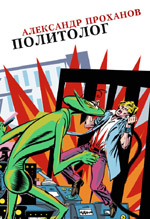
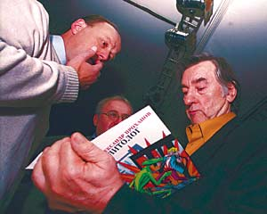
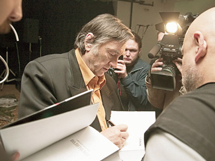
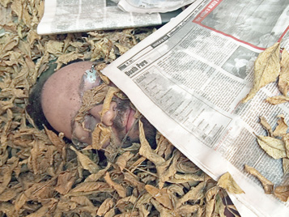
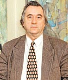
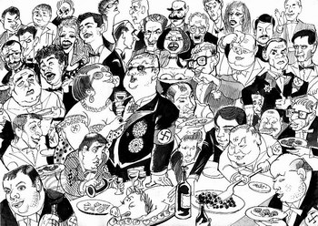

Александр Проханов • Политолог • вне серий • 12.10.2005

В новом романе Александра Проханова, главного редактора газеты «Завтра» и лауреата премии «Национальный бестселлер», читателя ожидает встреча с масштабной фантасмагорией современной российской политики. Главный герой романа, политолог Стрижайло, оказывается в самом центре фантастической политической интриги, в которой легко узнается совсем недавняя история страны — выборы в Думу и Президента, суд над опальным олигархом и трагедия на Кавказе. Легко узнаваемы и персонажи романа, нарисованные автором с ядовитым сарказмом. Но чем дальше разворачивается сюжет политического памфлета, тем больше смеха автора начинает напоминать смех сквозь слезы, а сатира оборачивается трагедией.
Пресса и контекст
Презентация романа Александра Проханова (06.10.2005)
Клуб «Дом» 12 октября в 19.00 по адресу Большой Овчинниковский пер., 24, стр. 4, м. Новокузнецкая, тел. 9537236
Новый, законченный летом этого года, роман Александра Проханова «Политолог» венчает саму собой сложившуюся серию политических фантасмагорий писателя, которую составили «Господин Гексоген», «Последний солдат империи» и «Крейсерова соната», опубликованные «левацким» издательством AdMarginem. С появлением эпическо-эпохального «Политолога», представляемого еще более радикально-экстравагантным издательством Ультра.Культура, перед читателем возникает своего рода тетралогия, Четвероевангелие от Проханова.
Рискованные религиозные коннотации тут вполне уместны, поскольку последние прохановские тексты суть почти мистерии, персонажи которых — героические генерал Белосельцев с капитан-лейтенантом Плужниковым, а теперь коварный и хитроумный, демонический политтехнолог Стрижайло — проходят все круги современного политического ада, описанного с дантовским размахом. И с такой же фантазией — некогда правоверный советский реалист-баталист, «соловей Генштаба» Проханов с крушением Империи превратился в отчаянного сюрреалиста, из Верещагина став Босхом. Гигантский социальный катаклизм — развал СССР — словно выбил почву из-под ног нашего автора, заставив его бесконечно левитировать в пространствах своего сознания и подсознания, посылая оттуда ядовитые проклятия рушащемуся миру. Выморочные территории прохановских текстов, сочетающих религиозную патетику с неприкрытой сатирой, барочные нагромождения метафор с откровенной публицистикой, литературный вымысел с газетной достоверностью (в «Политтехнологе» перед читателем появятся почти все действующие персонажи нынешнего российского политическо-культурного бомонда, причем некоторые под собственными фамилиями) — эти небывалые территории возникли на руинах подлинной страны, занимавшей шестую часть суши. С ее потерей Проханов и превратился в одиозного «красно-коричневого» оппозиционера, с отстраненным презрением следящим за копошениями постсоветской политики и не испытывающего сочувствия ни к одному из ее сегментов.
В «Политтехнологе» — энциклопедии российской государственности — равно отвратительны, ирреальны и беспомощны (последнее не касается лишь главы ФСБ Потрошкова) коммунисты, либералы, олигархи, политэмигранты и президент Ва-Ва. Как и главный герой-политтехнолог с говорящей жадной фамилией Стрижайло, одновременно обслуживающий всех их, ибо с детства заражен демонами зла. Избавление от этих демонов, прозрение и очищение Стрижайло и есть основной сюжет романа, заканчивающегося гибелью героя.
В современной России с ее заговорами, интригами, инспирированными властью террактами (события в Беслане — тема последней, скандально-провокативной, сравнимой по сенсационности с конспирологическим «Господином Гексогеном» части текста) нет места праведникам. И только природная катастрофа, гигантская волна таиландского цунами избавит страну от «цвета российского общества». Таков профетический пафос романа Проханова, который местами может показаться скабрезным, местами площадным, местами слишком лиричным.
Но именно отчаяние пророка скрепляет пеструю вязь этой книги, не случайно открывающейся эпиграфом из апокрифического Евангелия от Фомы. об огне, что вызывает слово.
Это слово сказано. «Политолог».
Александр Панов, журналист, обозреватель газеты «Объединенный гражданский фронт»
Презентация романа пройдет в форме артистических иллюстраций-фантазий. В полный рост оживет обложка книги, созданная не чуждым политических экспериментов художником Георгием Острецовым, создателем симулятивного «Нового правительства». На экране, напоминающем «Мобил» — придуманного Прохановым главного электронного помощника политтехнологов — завертится калейдоскоп из имиджей современной политики и культуры, репродукций картин, упомянутых в романе, и фотографий прототипов его героев — видеофильм Владимира Сальникова и Нины Котел. Наконец, Герман Виноградов материализует «шаманскую» линию романа, где олигарх Маковский частенько камлает сам, а также проводит в своих сибирских нефтяных угодьях праздник «Золотой шаман». Фотовыставка Виноградова станет аллегорической иллюстрацией трагического финала книги. Ну а еще Виноградов вызовет дух её автора…
Презентация романа Александра Проханова «Политолог»
Клуб «Дом» 12 октября в 19.00. Большой Овчинниковский пер., 24, стр. 4, м. Новокузнецкая, тел. 9537236
На колени, сука поганая! Презентация «Политолога»
12 октября в Москве состоялась презентация вышедшего в издательстве «Ультра-Культура» нового романа Александра Проханова «Политолог». Этот роман посвящен современной России с ее заговорами, интригами, инспирированными властью террористическими актами. Он – своего рода энциклопедия нашей жизни. В романе равно отвратительны, ирреальны и беспомощны коммунисты, либералы, олигархи, политэмигранты, президент и главный герой – политолог Стрижайло, прототипом которого стал мой хороший знакомый Станислав Александрович Белковский.
Александр Проханов, комментируя «Политолога» на «Эхо Москвы», попросил сюжетные линии романа, а также персонажи, которые там фигурируют, напрямую не связывать с реальностью. «Это вымыслы, это фантасмагорические, хотя и политически обоснованные сюжеты» – утверждал он. Вместе с тем в книге легко узнаваемы Владимир Путин и Владислав Сурков, Борис Березовский и Михаил Ходорковский, Геннадий Зюганов и Сергей Глазьев, Геннадий Семигин и Виктор Видьманов, Николай Харитонов, Александр Вешняков, Ксения Собчак и многие другие. Описываемые события охватывают период с начала осени 2002 года и до Беслана. В центре интриги – финансовые взаимоотношения по линии КПРФ-олигархи, когда вожди оппозиции, а в романе они, как и в жизни, – полные ничтожества, в обмен на места в партийном списке собрали около 35 миллионов долларов (в том числе 12.5 миллионов – с ЮКОСа) якобы на избирательную кампанию. Но обязательств своих не выполнили, а деньги банально украли.
Мне в ту пору довелось находиться близко к эпицентру событий. Поэтому я имею все основания утверждать, что сюжетная линия весьма точно воспроизводит реальность. Более того, во многих эпизодах я обнаружил свои собственные разговоры, а в некоторых описанных событиях принял самое непосредственное участие. Конечно, написанное – это все же не документалистика, а художественное произведение. Тот же главный герой политолог Стрижайло, его дела, его прегрешения – это не один лишь Белковский, а как минимум еще и сам Александр Проханов. А еще – Марат Гельман, Сергей Батчиков, Анатолий Баранов, Алексей Кондауров, Илья Пономарев, наконец, автор этих строк тоже. Но психологически, мировоззренчески, ментально, конечно же, Стрижайло – это Белковский.
На презентации, представлявшей из себя авангардистский спектакль, Белковский был внесен в центр зала, положен на кучу мусора, засыпан сухими листьями и обрывками старых газет, облит из ведра водой. Эта сцена соответствует окончанию романа, когда главного героя, как и любую другую вышедшую из-под контроля и ставшую опасной «бросовую агентуру», спецслужбы убивают, бросают в мусорную свалку, утрамбовывают бульдозером. Так заканчивается книжная жизнь Стрижайло. Но реальный Белковский естественно воскрес, встал и вышел на сцену, с которой зачитал пародию собственного сочинения на другого персонажа романа – Владимира Путина.
Затем к Белковскому присоединился Александр Проханов, а следом на сцену взошел адвокат Ходорковского Антон Дрель. Дрель, одно выражение лица которого буквально зовет провинциального чекиста к немедленному составлению плана вербовочных мероприятий, зачитал от имени бывшего узника «Матросской тишины» необычайно теплое поздравление Проханову и особенно Белковскому. Что не удивительно, учитывая реальное авторство абсолютно всех статей и писем опального олигарха из узилища.
Вслед за Дрелем автора и прототипа счел своим долгом поздравить по громкой телефонной связи лондонский изгнанник Борис Березовский. Даже несмотря на свою трагическую судьбу в романе, когда его, как когда-то Троцкого, в конце повествования агент с Лубянки убивает ударом по голове золотым ледорубом.
К сожалению, я на какой-то момент отвлекся и не уследил, каким именно образом поздравил создателя и героя романа еще один узник режима, кандидат в депутаты Госдумы полковник Владимир Квачков, которого недруги обвиняют в покушении на Чубайса. Правда, прототипа Квачкова в романе не просматривается, но со Станиславом Белковским их связывает многое – не только то, что известный политолог возглавил выборную кампанию заслуженного спецназовца, но и его явное содействие в помещении Квачкова в одну камеру с Ходорковским. Представляете, два клиента – политические звезды первой величины – и в одной камере! Разве такое вообще может быть случайным? Только необычайная креативность Станислава Александровича, его дар убеждения, позволяющий склонить кураторов к нетривиальным шагам могли привести к подобному яркому результату.
От кого не было поздравлений, так это от ФСБ, что, на мой взгляд, – нехороший признак. В романе Александр Проханов с поистине гениальной прозорливостью описал операцию чекистов под названием «Смех и слезы». Суть ее в том, что президента страны его собственная родная спецслужба откровенно «опускает», унижает, запугивает, делает податливым как пластилин, абсолютно управляемым. Достигается это двумя путями. С одной стороны, власть десакрализируют, над президентом на глазах у элиты и народа безнаказанно глумятся, выставляют его полным убожеством – этаким «крошкой Цахесом», и вдобавок целенаправленно создают ему виртуальные политические страшилки. В книге этим по заданию директора ФСБ занимается политолог Стрижайло. В реальной же жизни мы тоже видели унижение российской власти через киевский майдан, через памятное беснование там «ведьмы Юли». Мы постоянно видим «опускание» Кремля и через публичную деятельность Березовского, и через «левые повороты» Ходорковского, и через антикремлевскую трансформацию множества политических проектов наподобие той же «Родины», и через акции НБП и выборы Квачкова, и, наконец, через умело распускаемые слухи и яркие антипутинские памфлеты и комментарии Белковского. И ведь везде присутствует Станислав Александрович, и ничего ему за это не бывает – воистину уникальный человек!
Но есть в романе второй, зловещий пласт тайного плана ФСБ, существующий параллельно первому и многократно усиливающий его разрушительную мощь. Это – «чеченский» терроризм, кровь сотен невинных людей, которых слабая власть защитить не может. Это заговор, сокрушающий легитимность президента, подавляющий его волю. Это доведенное до конечной стадии и скорректированное лишь в самый последний момент покушение на Чубайса – своего рода намек первому лицу. И во всем этом первая роль уже не у нашего политолога и не у его реального прототипа. Наоборот, книжный Стрижайло на каком-то этапе стал лишним свидетелем, которого «убрали», как и многих других свидетелей – такова цена современной российской политической интриги.
Слава Богу, Станислав Александрович Белковский жив, здоров и очень деятелен. Он по-прежнему ездит в Лондон к Борису Абрамовичу, по-прежнему ездит в Киев к «ведьме Юле», хотя украинские спецслужбы, которые в последнее время пополнились новыми кадрами, на него уже откровенно косятся. А еще Белковский нашел себе новые объекты приложения неуемной энергии – Киргизию и Казахстан, где суровые мусульманские парни косятся на его экстравагантную внешность и манеры еще больше, чем терпеливые украинцы. Наконец, Станислав Александрович в центре всех сколько-нибудь значимых антипутинских проектов и инициатив на лево-патриотическом фланге. Я не беру здесь полудохлую КПРФ, от которой буквально разит мертвечиной. Понятно, что Белковского там теперь и близко нет. Но везде, где есть хоть какая-то искра креативности, хоть малейшая перспектива, там он обязательно присутствует. И по-прежнему необычайно остро его перо, направленное в самое сердце Кремля.
Во время театрализованного представления, когда Белковский лежал под кучей сухих листьев и газет, к нему подошел актер, изображавший шамана – в красном чепчике, со шкурой лисицы через плечо и в трусиках «танго». В руках «шамана» оказалось устройство, напоминающее газовую горелку. Сильный огонь буквально скользил, соприкасался с листвой и обрывками бумаги. Мне в какой-то момент стало жутко. Но, к счастью, все обошлось. Как я уже написал, Белковский воскрес.
На радостях я пожал ему мокрую руку, поздравив с необычайным успехом. Затем, взяв несколько экземпляров книги, подошел к Александру Проханову. Александр Андреевич, выдающийся писатель нашей жестокой, но интересной эпохи, находился в прекрасном настроении, но, было видно, сильно устал. Я не стал обременять его долгими нудными разговорами – в книге и так все сказано сполна. Получив от писателя чрезвычайно теплые дарственные подписи на экземплярах для своей мамы, большой поклонницы его таланта, а также для отсутствовавших по уважительным причинам Натальи Сергеевны Роевой и Владимира Ильича Филина, я пожелал Проханову новых творческих удач и на том, взяв свою нелегкую ношу, покинул замечательное мероприятие.
Суриков Антон 2005.10.14, https://forum-msk.org/material/society/3700.html
Александр Вознесенский. Привет от Ходорковского Проханову и Белковскому (Независимая газета, 14 октября 2005 г.)
Презентация романа Александра Проханова «Политолог» (Екатеринбург: Ультра.Культура, 2005) в московском клубе «Дом» началась в среду вечером в отсутствие автора. Проханов в это время отвечал на вопросы в эфире радиостанции «Эхо Москвы», и его голос транслировался в пространство клуба под видеоинсталляцию Владимира Сальникова и Нины Котел: на экране мелькали изображения деятелей современной политики и культуры, сменялись картины, фотографии художников и их работы, упомянутые в книге, под огромной обложкой которой работы Георгия Острецова встречал гостей главный редактор «Ультра.Культуры» Илья Кормильцев.

Писатель пописывает – и подписывает. Фото Александра Шалгина (НГ-фото)
Когда смолк радио-Проханов, началось гораздо более шумное действо под предводительством художника Германа Виноградова – натуральное камлание среди стихий огня, металла и воды, воплощенных паяльной лампой, свечами и бенгальскими огнями, висящими и звучащими железными прутами, струйками из вращавшихся бутылок и т.п. С горловым пением, напоминавшим глоссолалию бормотанием поэта Вилли Мельникова и прочими громкими звуками.
Один из героев «Политолога», олигарх Маковский, сам камлает и проводит в сибирских нефтеносных краях праздник «Золотой шаман», так что огненно-скрежещущее шоу стало иллюстрацией к роману и завершилось вносом живого тела модного политолога Станислава Белковского – прототипа главного героя с фамилией Стрижайло, успешного, демонически хитрого манипулятора, по сюжету нанятого руководством Компартии для создания «стратегии победы» на думских выборах и в конце гибнущего.
Двое в касках – сотрудники «Ультра.Культуры» – с явным усилием дотащили Белковского на руках к центру композиции из разных причудливых объектов и буквально бросили на заготовленную лежанку – вроде тех, что обустраивают для ночлега бомжи. После чего политтехнолога полностью засыпали листвой и какой-то ветошью. Виноградов изрядно плеснул в образовавшуюся кучу из ведра (кажется, все-таки водой), покружил вокруг с паяльной лампой, но жечь не стал.
Тем более что в зале наконец появился Проханов, обменявшийся у входа книжками с Сергеем Доренко (у которого только что вышел роман под названием «2008») и с интересом наблюдавший за действиями Виноградова. Спасать Белковского не пришлось, он встал и пошел сам, отряхиваясь от листвы и воды, к сцене, с которой из папочки зачитал якобы приветствие якобы Путина, суть которого сводилась к тому, что со свободой слова в стране порядок, раз такие книжки, как «Политолог» или «Господин Гексоген», вообще выходят.
Потом на сцену вышел и сам Проханов с серьезным заявлением: «Я вызвал сюда ОМОН, и пока он едет, надеюсь, что-нибудь успеет сказать адвокат Ходорковского Антон Дрель». Дрель зачитал послание Михаила Ходорковского, переданное в конце прошлой недели, когда его подзащитный был еще в Москве. Из него следует, что Ходорковскому (тоже прототипу – Маковского) даже в тюремной камере удалось ознакомиться с книгой, она ему понравилась, он рад «правильному выбору» прототипа главного героя и надеется, конечно, встретиться с автором и его героем (героями) на воле. Ваш корреспондент, конечно, поинтересовался потом у Дреля, где сейчас Ходорковский. «Знать бы!» – последовал ответ.
После приличествующих случаю речей перешли к неформальному общению. Выпивали и обсуждали: политику, футбол, книги, Проханова. «На Андреича должно работать несколько издательств», – говорили в кулуарах о писательской плодовитости Проханова, выпустившего за относительно небольшое время сразу несколько толстенных романов. Выходившие в «Ад Маргинем» после скандального «Господина Гексогена» вещи пока не «выстрелили», а для «Ультра.Культуры» это автор новый, с ним можно и поработать по-новому, да и сам роман, надо признать, небезынтересен (см. о «Политологе», в частности, статью Григория Заславского и Сергея Шаргунова «Власть имущие под пером и на сцене», в «НГ» от 21.07.2005).
Однако сотрудничества с традиционными своими издателями Проханов не прекращает. В «Ад Маргинем» готовится к выходу новая книга – бесед Проханова с критиком Львом Данилкиным. Только в расшифровке их разговоров больше 1 миллиона 200 тысяч знаков. Ну да говорить нам никто не мешает. И ОМОНа так и не дождались.
http://www.ng.ru/culture/2005-10-14/12_privet.html
Борис Кагарлицкий. Типология мелкого беса (24.10.2005)
Политическая тусовка бурно обсуждает новый роман Александра Проханова «Политолог». Роман и в самом деле скандальный. Главный редактор газеты «Завтра» открывает читателю кучу скандальных подробностей, обрушивается с яростными нападками на оппозицию, которая на страницах его книги выглядит ничем не лучше власти, издевается над своими друзьями антисемитами и буквально смешивает с грязью руководство Коммунистической партии РФ. Имена, разумеется, изменены, но все детали, бытовые и деловые, воспроизведены крайне тщательно, да и внешность героев описана так, чтобы никто не мог ошибиться.
В романе достается всем, только партия «Родина» блистает своим отсутствием. Что, в общем, понятно. Ничего хорошего про них сказать писателю творческая совесть не позволяет (надо признать, что роман, при всём своём цинизме получился удивительно честный), а обругать собственных спонсоров главный редактор «Завтра» всё-таки не решается. Заодно отсутствует и сам Проханов.
Подробно описывая скандальные события, связанные с исчезновением денег, выделенных олигархами на избирательную кампанию КПРФ в 2003 году, рассказывая в лицах о склоках и интригах в руководстве партии, он скромно умалчивает о своей собственной роли. Впрочем, не совсем…
Единственный персонаж, не вполне узнаваемый, это главный герой, политолог Стрижайло. Образ явно собирательный, но отнюдь не лишенный прототипа. В рецензии на роман, опубликованной на «ФОРУМЕ.мск» известный «красный политтехнолог» Антон Суриков заметил, что Стрижайло списан со Станислава Белковского. Конечно, «его дела, его прегрешения – это не один лишь Белковский, а как минимум еще и сам Александр Проханов. А еще – Марат Гельман, Сергей Батчиков, Анатолий Баранов, Алексей Кондауров, Илья Пономарев, наконец, автор этих строк тоже. Но психологически, мировоззренчески, ментально, конечно же, Стрижайло – это Белковский».
Итак, главный – и далеко не положительный – герой, в чем-то является автопортретом писателя. Именно поэтому внешнего сходства с Белковским – в отличие от других прототипов – не наблюдается. Но с другой стороны, Белковский от родства с героем романа отнюдь не открещивается. Больше того, с гордостью приходит на презентацию книги, а затем на сцене разворачивается шоу, в котором известный политолог сам же играет роль Стрижайло, окончательно сливаясь с собственным литературным образом.
Учитывая то, что Стрижайло в книге показан совершенным мерзавцем (хоть и не лишенным таланта и способным, порой, к рефлексии), такое поведение выглядит, по меньшей мере, странным. Разумеется, нынешнее политическое сообщество живет по собственной логике. Здесь любая репутация по критериям обыденной жизни является дурной репутацией. А любая популярность – пусть даже в качестве злодея – считается политическим капиталом, помогающим накопить капитал финансовый. И всё же, мне кажется, что причина лежит несколько в иной плоскости.
Политические технологи, журналисты, аппаратчики и всевозможный обслуживающий персонал политического процесса с гордостью позируют в качестве основных героев этого самого процесса. Не случайно в последнее время рынок буквально заполонили книги с откровенными рассказами бывших пресс-секретарей и «допущенных» к первым лицам журналистов, где рассказывается о том, как всё происходило «на самом деле». Заодно в выгодном свете демонстрируется и собственная роль, которая, как понимает читатель, была куда более значительной, нежели казалось со стороны.
В таких книгах всё выглядит очень грязно, цинично, порой – смешно, и они вполне удовлетворяют любопытство обывателя, интересующегося «тайными пружинами политики и власти». Нет сомнения, что большая часть описываемых фактов вполне реальна. А если учесть некоторые провалы в памяти авторов, неизменно идеализирующих самих себя, легко догадаться, что всё даже хуже, чем в подобных книгах написано.
Тем не менее, к действительным движущим механизмам политического процесса все эти истории не имеют ни малейшего отношения. Представьте себе, что перед нами – в двумерной проекции – записан маршрут какого-то автомобиля. Он странным образом петляет, делает круги и почти не продвигается вперед. Одни ищут объяснение этим странностям в устройстве автомобиля, другие в характере водителя, третьи в его взаимоотношениях с пассажирами. Делаются очень остроумные и верные наблюдения. И лишь взглянув на карту, вы обнаруживаете, что машина идет по горной дороге. Нет здесь никаких развилок и поворотов. Как проложили дорогу, так наш герой и едет. Или наоборот, никакой дороги вообще нет. А есть лишь корабль – без руля и без ветрил – горючее давно закончилось, машины вышли из строя, навигационная аппаратура не функционирует, штурвал заклинило, а радио работает только для внутреннего пользования (обрушивая на ошалевших пассажиров поток оптимистических сообщений).
При этом на верхней палубе идет постоянная драка за доступ в каюты люкс, на капитанском мостике плетут интриги, а штурман и его помощники продолжают спорить по поводу плана спасения. Специалисты по пропаганде отталкивают друг друга от микрофона внутренней радиостанции. Время от времени даже начинают функционировать отдельные приборы, но это никак не меняет положения по существу.
Подробности драки в офицерском кубрике могут быть очень увлекательны, или, наоборот, омерзительны. Но корабль всё равно плывет по течению. Когда, нарвавшись на рифы, он пойдет ко дну, в газетах, быть может, появится имя капитана, но никто не вспомнит ни о его советниках, ни об амбициозных младших офицерах, претендовавших на роль штурмана обреченного судна.
Роман Проханова вряд ли войдет в историю русской литературы и даже в спецкурс по отечественной политической культуре начала XXI века. Не потому, что он плохо написан, он написан рукой мастера, а потому что слишком ничтожна его тема, и слишком мелки его герои.
http://www.forum.msk.ru/material/society/3924.html
Григорий Заславский, Сергей Шаргунов. Власть имущие под пером и на сцене. О новом романе Александра Проханова и другой злобе дня (Независимая газета, 24.10.2005)
Скоро на книжных прилавках появится новый роман Александра Проханова. Называется роман злободневно – «Политолог». И на этот раз его сюжет крайне приближен к событиям новейшей истории.
В прицеле – последние годы и свежайшие темы: выборы Госдумы и президента, арест Ходорковского и последующий суд, трагедия Беслана. Как сообщил сам Александр Андреевич, «центральная фигура романа – политолог Михаил Львович Стрижайло. Он предприимчив, изобретателен, безумно активен, полон энергии. Этот креативный человек, оперирующий самыми разными общественными пластами, использует разнообразные методы для достижения цели: и физическую расправу, и магические колдовские приемы. Хотя образ и собирательный, но на создание Стрижайло меня вдохновил мой друг политолог Станислав Белковский», – признался Проханов.
По словам писателя, г-н Стрижайло находится в постоянном контакте со зловещим Патрушковым, в котором, конечно, проглядывают некоторые черты директора ФСБ, но литературный персонаж – масштабнее и фееричнее. Патрушков замыслил переломить ход человеческой истории, поменять привычные культурные коды, отбросить в небытие «христианскую тупиковую мораль». В финале произведения, по замыслу демона Патрушкова, происходит грандиозная провокация – «кровавая встряска», в которой угадывается Беслан. Политологу Стрижайло в этой бойне отведена ключевая роль. Опомнившись и ужаснувшись бойне, некогда коварный политолог преображается, раскаивается и посылает куда подальше «темного господина». После чего мстительный Патрушков закатывает Стрижайло в мусорную свалку. И там, среди объедков, презервативов, пожелтевших газет, распадаясь на атомы, умирая, Михаил Львович оживает для новой жизни и попадает в Русский Рай.
Сам политолог Станислав Белковский был удивлен, узнав о романе Проханова и что, возможно, послужил прототипом. Однако признался, что «давно собирался написать роман о Проханове, и, видимо, он решил меня опередить. Мой Проханов – персона неоднозначная, к нему будет историческая претензия. Великий учитель так и не стал великим вождем. В 92-м году он мог возглавить КПРФ, и, возглавь, в 96-м история России сложилась бы по-другому. Если бы Проханов был кандидатом в президенты вместо Зюганова, эпоха Ельцина закончилась бы 9 лет назад», – подытожил Белковский.
Кстати, по поводу прототипа политолога есть и другие мнения. Так, давний друг Проханова главный редактор газеты «День литературы» Владимир Бондаренко, оценивающий новую вещь, как «фантасмагорическое босхиниановское полотно», полагает, что в образе Стрижайло отразился не только Белковский, но и другие технологи от политики, в частности, Глеб Павловский, да и сам Проханов.
«Я не читаю романов Проханова, – прокомментировал Глеб Павловский, – потому что хорошо к нему отношусь и не хочу портить впечатление. Считаю его выдающимся политическим лириком. Он хорош в малой форме газетных передовиц».
Что касается других видов искусства, то кино снимать, кажется, пока побаиваются, а вот на театре кое-что ставят. Встретить в театре Путина Владимира Владимировича, президента РФ, почти невозможно. Но – если принять во внимание малость имеющихся возможностей – проще встретить его в зале в качестве зрителя, нежели на сцене в качестве героя того или иного спектакля. Как зритель за последние годы он побывал во МХТ имени Чехова, в «Сатириконе», в «Современнике», в Большом. Был и в Ярославском драмтеатре – правда, не на спектакле, а на репетиции. Однако на президенте свет клином не сошелся.
И зрители, и критики обнаруживают в том или ином персонаже намек на других действующих лиц нашей политики. Например, кое-где появляется образ Ходорковского. Так было со спектаклем МХТ имени Чехова «Доходное место», – цивилизованный олигарх в исполнении Олега Табакова как бы оправдывал и наших родных миллионщиков. Весьма прозрачно прочитывается судьба Ходорковского и в новом спектакле Юрия Любимова в Театре на Таганке «Суф(ф)ле».
Ельцина, Горбачева – случалось, пародировали, даже выводили на сцену, причем даже и иностранцы, гастролировавшие в России. В недавней премьере Большого, «Детях Розенталя», звучат голоса почти всех первых руководителей СССР, но, добравшись до Ельцина, театр ставит жирную точку. Путина – реального или метафорического – в нашем театре почти не играют.
Любопытно, что почти нарочитое равнодушие к нынешнему руководителю соседствует и даже входит в очевидное противоречие с настойчивым, демонстративным вниманием театра к Сталину. Его играют в «Современнике», в «Школе современной пьесы», в Академическом театре имени С.Образцова, в Театре на Таганке (в исполнении самого Юрия Любимова).
И тем не менее кое-какие крохи можно найти. В.В.Путин – один из героев спектакля «Трезвый PR», полтора года назад вышедшего в Театре.doc. Сам он на сцене, правда, не появляется, но его имя упомянуто не раз, о нем – речь. Путин – герой пьесы-диалога «Путин.doc», репетиции которой идут в том же самом театре, а отдельные сцены пьесы несколько раз в течение года были представлены в московских клубах в рамках проекта Политического кабаре. Любопытно, что сейчас эту пьесу репетирует третья пара актеров – четверо отказались под самыми разными предлогами, в частности, ссылаясь на русофобию пьесы и ее «заказ» Березовским и Гусинским. Пока премьеру планируют сыграть в сентябре.
И еще: интонации Путина и его манера, скопированная героем недавно вышедшего в МХТ имени Чехова «Лесе», стали едва ли не главным событием спектакля и уж точно – одним из главных впечатлений от этой премьеры. Справедливости ради надо сказать, что спектакль хорош и сам по себе. Но, видно, режиссер почувствовал, сколь велика тоска публики по чему-то по-настоящему злободневному.
http://www.ng.ru/politics/2005-07-21/1_prohanov.html
Дмитрий Быков. Рвота (Огонек, 25.10.2005)

По прочтении романа Александра Проханова «Политолог» я некоторое время щипал себя, а потом позвонил Илье Кормильцеву – основателю и главному редактору издательства «Ультра-культура», в котором эта книга вышла.
— Кормильцев, – сказал я страшным шепотом. – Что же ты делаешь?!
— Ужинаю, – испугался Кормильцев.
— Я не в том смысле. Я в смысле – зачем ты это издаешь?
— А! – обрадовался Кормильцев. Он самый умный из российских поэтов и придумывать культурологические концепции любит даже больше, чем ужинать. – Что это за гранью литературы – ты сам понимаешь, так? Но когда реальность выходит за рамки всех критериев – о ней ведь нельзя писать традиционной прозой! Роман Проханова грешно рецензировать как факт искусства. Но если человек пишет такие романы, а другие люди их печатают и всерьез обсуждают, значит, все действительно уже того, дальше некуда.
Ну тогда понятно, почему у нас такая литература, такое кино и соответствующее телевидение. Важная тенденция момента: деятели культуры перестали быть творцами реальности и решили стать ее симптомами. Видимо, звать живых уже бессмысленно и остается только на собственном примере продемонстрировать им, как далеко все зашло. Можно сказать, человек не щадит литературной репутации, чтобы все продемонстрировать наглядно. И то сказать, чем разоблачать воровство, лучше самому один раз спереть пару коллизий у Сорокина (про лед), а еще пару – у Пелевина (про нефть), а фамилию и образ олигарха (у Проханова его зовут Маковским) стырить у Юлия Дубова. Правда, у того описывался Березовский, а у нас – Ходорковский (герой Проханова владеет компанией «Глюкос» и позиционирует себя как идейный либерал). Но какая разница, даром что один требует правого поворота, а второй призывает к левому. Между Лондоном и Ямало-Ненецким округом разница куда глубже и серьезнее, но Проханов ведь не географию пишет, а политический роман… Политически же детская болезнь левизны Ходорковского тождественна стыдной болезни правизны Березовского, такое у нас пространство. Лучше, как Проханов, одинаково отвратительно обо всем этом написать. Кстати, эффект интересный. Отвращения к Проханову не возникает, а вот к политтехнологу Стрижайло, шефу ГБ Потрошкову, коммунистам Дышлову и Семиженову, олигарху Верхарну, нефтемагнату Маковскому и лично шефу всей страны – вот оно тут как тут. Такова системная особенность чудовищной литературы: все, к чему она прикасается, превращается в ту же субстанцию, из которой она сделана. В случае Проханова это рвота.
Самое ужасное, что он тужится это делать красиво. Видно, что человек, написавший эту книгу, долго, до объедения, читал русских символистов и итальянских традиционалистов, и английских сатанистов, и немецких вагнерианцев, а потом столь же долго посещал патриотические тусовки, где ел много поросенка с кашей, и либеральные тусовки, где ел много осетрины (либералы свинины не едят), и политтехнологические тусовки, где ел поросенка с осетриной (политтехнологи едят все), и дышал парфюмом от кутюр, которыми пахли светские девушки, и потом еще парился с ними в бане, запивая процесс лучшим шампанским, – и теперь его всем этим неудержимо рвет на Родину, рвет на части, выворачивает буквально с потрохами. В этой жиже высокие идеи соседствуют с презервативами, непереваренные принципы Эволы и Хайека — с непереваренными абзацами глянцевого гламура (именно в этом стиле Проханов описывает интерьеры, туалеты, закуски, парфюм и женские тела), а разные фрагменты этой самой женской плоти, особенно часто ноготки с педикюром, всплывают вдруг среди развороченных внутренностей жертв терактов. Какое-то, в общем, ужасное варево. Но ведь Кормильцев, который нас всем этим кормит, совершенно прав: это сейчас почти во всех головах. И потому главное наше состояние – отвращение ко всему: нет нескомпрометированной идеи, незапятнанного лидера и нерасколовшейся партии.
С художественным анализом я тут, наверное, покончу, потому что никакой пересказ прохановской прозы не заменит ее цитирования, а цитировать надо всю книгу. Я сначала выписывал что-то типа: «Обезумевший шеф гестапо выдрался из плоти Стрижайло, впился в девушку, слился с ней, как сливаются жертва и палач, образуя нерасторжимое онтологическое единство. Дух Третьего рейха, «Золото Рейна», «Завещание Гитлера», «Гибель богов» Рихарда Вагнера – все это ломилось в истерзанную жертву, переполняя космическим ужасом».
Не знаю, как истерзанную жертву, а меня переполняет. В общем, безнадежное дело стилистического разбора я бросил быстро: рвота – она ведь не затем, чтоб обсуждать ее вкусовые достоинства. Она для анализа, для диагноза… Будем анализировать Проханова как симптом.
Александр Андреевич – человек откровенный. Иногда говорят, что Проханов – соловей Генштаба. Ну, может быть. Но ведь не цепной пес Генштаба! Его эволюция даже показательнее лимоновской, потому что Лимонов большой писатель и личность его мешает рассмотреть политические процессы. А Проханов – мастер лубка, вместо кисти у него помело, он Лидия Чарская нашей патриотической литературы, но Чарская, обчитавшаяся Стивена Кинга… Сквозь него все видно. Видно неизбежное разочарование в Зюганове и иных аппаратчиках, в Семаго и иных красных миллионерах, в Рогозине и иных засланных казачках, в Березовском (который дал Проханову пространное интервью о своей любви к великому красному проекту), в Ходорковском (который дал Проханову аналогичное интервью на аналогичную тему). Всем Проханов был нужен как союзник, все его рано или поздно сдавали или отбрасывали, потому что политикам нужны именно цепные псы, а не соловьи. Со своими трелями и фиоритурами, с единственной боевой левой газетой, с тридцатью томами прозы Проханов остался совершенно не у дел, даром что он действительно любит Красную Империю, великие проекты и прочие игры разума. Он и сам явление великое, без преувеличения, потому что в его безвкусии есть нечто титаническое, и даже когда его рвет – получается поток на 700 страниц! Но то, что одного из виднейших и самых громких идеологов Красной Империи окончательно отвратили не только противники, но даже единомышленники, – серьезнейший диагноз. Иногда кажется, что мерзкий олигарх Верхарн ему даже милее красного вождя Дышлова. А уж как Проханов на этот раз проехался по спецслужбам! Всегда в его романах наличествовали люди оттуда – «последние солдаты империи», железная когорта, мудрецы и волхвы… Но теперь эти персонажи – вроде упомянутого Потрошкова – вызывают одно голое омерзение.
«Политолог» – книга о смене политических поколений. Первая ласточка. Проханов просто раньше всех успел. Дальше, я уверен, появятся книги демократов, разочарованных в демократии, лимоновцев, уставших от Лимонова (одну такую я уже читал, скоро выйдет), а еще до Проханова подобную исповедь, правда, не в виде романа, опубликовал Михаил Ходорковский. Это было письмо олигарха, разочарованного в олигархии. «Политолог» – книга о закате политических технологий, о конце эры манипуляций. Идейная борьба кончилась, потому что все идеи захватаны грязными руками. Это в конечном итоге и есть главное, о чем Проханов написал свой роман. Грядет новая эра, в которой политологов не будет, – не зря в конце мертвого Стрижайло бросают в мусорную яму. Пришло время более честное, но и более отвратительное: на смену патриоту, демонстранту, читателю «Завтра» идет скин, на смену гэбисту-имперцу – простой нерассуждающий исполнитель с единственной задачей крушить, ломать, не давать и при этом хапать.
Проханову я тоже позвонил, не удержался.
Мне показалось, Александр Андреевич, что в вашем романе есть некий гуманистический пафос. Пафос усталости от всеобщей подлости и бесчестности – и жажда, что ли, самопожертвования…
Конечно. Там же лейтмотив – подвиг Аники-воина. Только жертвовать надо не другими, а собой. Жертвуя другими, ты переходишь в низшие страты, а жертвуя собой – совершаешь белый подвиг.
— А совместим национализм с гуманизмом-то?
— Разумеется! Иначе какую же нацию вы построите?
Нет, определенно в мире что-то сдвинулось. Это, конечно, не левый и не правый поворот и даже не путь наверх, как казалось иногда. Это честное и окончательное свержение вниз – прочь от фарисейских прикрытий, которыми мы утешались, от либеральных и имперских идей, которыми жили, в черную яму грубой и окончательной реальности. Где все беспросветно, зато честно.
«Бульдозер затрамбовал мертвое тело в глубину свалки, двинулся дальше, светя прожектором. И тело, оказавшись в мокрой глубине, стало сразу же разлагаться. Тело разрушалось, переставая быть, и из этого тела, неподвластная тлению, исходила душа. Бестелесная, чистая, устремлялась в желанный рай.
Они шли втроем по сияющему снежному полю – он, жена и их ненаглядный сын. Красные лыжи скользили по солнечному насту, огибали сухие зонтичные цветы, с которых сыпался иней. На одном цветке сидел разноцветный щегол – птица русского рая. Обклевывал семена, ронял на снег, осыпал с цветка драгоценную солнечную пыльцу».
Может ведь, когда хочет.

http://www.ogoniok.com/4916/18/
Вадим Штепа. Рецензия
Дочитал новый роман Александра Проханова “Политолог”.
Этим романом Проханов фактически уничтожил политику. По крайней мере, в ее общепринятом понимании. Это не просто “разочарование” – но печальный антропологический анализ нынешнего “человеческого материала”. Анализ практически безысходный – однако автор все же еще цепляется за “прежнее христианство” и идеалы “человечности”. И в финале, в лице главного героя, восстает против тотальной “перекодировки”, затеянной шефом ФСБ Потрошковым – персонажем прямо-таки лавкрафтианских масштабов…
Проханов-сатирик убойнее всяких “телеюмористов”. Вот к примеру сцена выноса Ленина из Мавзолея и запуска его в космос:
Величаво, потупив глаза, с обнаженными головами, с лысинами и остатками седых волос, шествовали преподаватели марксизма-ленинизма, – несли в руках полное собрание сочинений Ленина. Большинство из них давно оставило кафедры. Некоторые преподавали богословие в духовных семинариях. Особенно выделялся епископ в золотом облачении, когда-то защитивший диссертацию на тему: «Свет ленинизма и тьма поповщины».
Можно ли к такому “христианству” относиться всерьез? А к такой “человечности”?
Сообщения о незначительных нарушениях то и дело поступали в Центризбирком. В одной из деревень избирательную урну, у которой было выпилено дно, установили на льду реки над прорубью. Бюллетени пролетали урну, попадали в прорубь, и их уносило течением. В другой деревне избирателей встречал местный милиционер, отбирал паспорта и сам голосовал за всех односельчан, объясняя, что «так надо». Еще на одном участке местный плотник, не желая сорить на пол, кинул в урну непогашенный окурок, отчего дотла сгорел весь участок, скотный двор, школа, контора местного самоуправления, десять домов деревни, соседнее село, часть райцентра, где, к счастью, никто не пострадал. Нарушений было много, но они не вызывали особых возражений у наблюдателей из Евросоюза. Кроме одного, когда вместо урны использовался еловый, обтянутый кумачом гроб, который, по окончании голосования, захоронили вместе со всеми бюллетенями и умершим ветераном войны. На могильном камне ветерана были выбиты такие слова: «Мной остановлены пруссы и готы, но меня доконали льготы».
Смысл “перекодировки христианства” состоит в биотехнологическом создании “нового человечества” и фантастическом ремейке монархии под управлением шарообразного “наследника”. На фоне прохановской антиутопии отдыхают не только Оруэлл с Замятиным, но и Дали с Босхом. Сюжет завязывается из каких-то общеизвестных фактов, но затем их реальные очертания зашкаливают в сюрреал и наворачиваются друг на друга, порождая гомерические картины. С точки зрения “прежнего христианства” эта “постчеловеческая” ситуация и называется Адом.
Вырываясь оттуда ненадолго, герой обретает Рай на Русском Севере – но какой-то уж слишком локальный. Проханов шыбко любит древнюю Псковщину, которая постоянно всплывает в его романах, но тем самым он и ограничивает идею Севера. Проект Глобального Севера его пугает – он видит там только сплошную инверсию “вечных идеалов”. У него Север принадлежит олигарху Маковскому, толкающему порой замечательные, парадоксальные афоризмы о мировой элите:
Среди человечества есть «золотой миллиард». Среди «золотого миллиарда» есть «платиновый миллион». Среди «платинового миллиона» есть «алмазная тысяча». Среди «алмазной тысячи» есть «нефтяная сотня», – «черная сотня России». Мы – черносотенцы русской «либеральной империи». Наши руки не в крови, а в нефти.
Проект нового северного города, Китежа, мы представили еще несколько лет назад – кстати, именно в “Завтра”: Он будет строиться как полигон русской свободы: город, соединяющий в себе черты Афона, Гоа и Запорожской Сечи, город монастырей и рок-фестивалей, крестных ходов и техно-пати, земских соборов и хакерских конгрессов, город безумных проектов, высоких молитв и чистой любви, живущий по собственным законам и под собственной юрисдикцией. У Проханова же сегодня это проект скорее напоминает картину из “Матрицы” – слишком красочную и привлекательную:
Ехали по городу, который казался огромной оранжереей. По всему периметру работали невидимые соленоиды, создававшие над городом незримый электромагнитный купол, который приводил к парниковому эффекту, – прозрачный слой нагретого воздуха отделял город от арктических ветров, не пропускал ледяные дуновения тундры, поддерживал субтропическую температуру. Повсюду росли пальмы, цвели магнолии, пламенели соцветиями рододендроны. Благоухало, как в приморских парках Сочи, как в Батумском ботаническом саду. Архитектура была невиданной красоты, – строгая стеклянная геометрия в духе Ле Корбюзье и Миса Ван Дер Роэ. Изящная пластика в манере Нимейера. Фантазии на тему Сааринена. То стилизация под архитектурные направления всех времен и народов. То абстракции, напоминавшие раковины, медузы, фантастические растения. И повсюду, – на фасадах, над крышами, на воздетых мачтах красовалась эмблема «Глюкоса». Магический треугольник и в нем – немеркнущий вещий глаз… Под куполом из специальных форсунок распыляется легкий наркотик, производящий действие «веселящего газа».
Этот город представляет собой жестокую пародию на Рай – хитрый олигарх периодически закатывает его обитателей в нефтяные пласты. Что ж, такова “философия нефти”, заставляющая мыслить в своем контексте даже ее радикальных критиков:
Антиутопическое сознание апокалиптично. Неслучайно в эпилоге романа автор “топит” всех своих антигероев в азиатском цунами. Но реставрация “прежнего христианства” – это конечно уже иллюзия. Однако не менее иллюзорной выглядит и нынешняя постчеловеческая “реальность”, блистательно показанная в романе. Их объединяет желание остановить историю в ее усталой оседлости, которой кажется, что “ничего нового больше не будет”. Но историческая спираль раз за разом это опровергает. На самом деле не трагедия повторяется как фарс, но пародия предшествует реальности…
Баранов Анатолий. Проханов создал ад, чтобы найти там Бога (2005.10.24)
Голый мужик, довольно обрюзглый, хотя и не лишенный в прошлом некоторой формы, прикрывши срам куском шкуры и с хвостом, похоже, волчьим на трясущейся заднице, бродил в курном дыму, появлялся в круге света, снова шел в темноту, зажигал какие-то огни, издавал горлом невнятные звуки, стонал и выл, подобно волку от которого остался один хвост, лишенный волчьего тела. Камлал.
Звуки голосов, и без того мучительные для человеческого слуха, усиливались современной техникой и делались нестерпимыми. Посреди, похожий на поставец, который ставят возле особо почитаемой иконы, и куда с надеждой ставят свечки богомольцы, круг свечей вращался, все быстрей и быстрей, и это сходство с привычным в храме объектом завораживало, приковывало внимание – и своим неожиданным вращением окончательно уничтожало реальность, и без того иллюзорную.
Авангардный клуб, в полутьме которого начиналась презентация книги писателя Проханова, постепенно исчезал в собственных темных углах, а посреди него создавалась воронка, в которую, медленно закручиваясь вокруг себя против часовой стрелки, втягивалось пространство и люди.
Шаман камлал долго. Голова начала гудеть, в висках стучало, а невыпитая водка каким-то нефизиологическим образом производила окоселость, не касаясь нутра. Жизнь больше не казалась медом, да и жизнью уже в полном понимании этого слова переставала быть.
Единственная реальность, которая вдруг проявилась вполне неожиданно в самом центре этой воронки – сцена из романа, финальная, где самим содержанием действия, главным героем и всем остальным была Смерть. Смерть персонально политолога Стрижайло и Смерть как заглавная вип-персона на иллюзорном празднике жизни.
Из первичного бульона, из околоплодного пузыря, из сточных вод эволюции в круг света внесли уже убитого Стрижайло, закидали листьями, мусором и использованными презервативами и бросили разлагаться. Это разложение было единственным реальным действием в финальной сцене, по сути, финальной и единственной, которую можно было назвать, поскольку другое не имело еще имени и было до имен.
Я с трудом узнал Белковского в ворохе листьев, хотя знал заранее, что это должен быть он. Потому что там, в воронке, был не Стас, хотя и он тоже был там, но помимо него было множество и имя им легион.
Примерно так же, видя в гробу хорошо знакомого тебе, и еще несколько дней назад виденного человека, поражаешься его непохожести на себя. Православный поп непременно скажет: «Он уже далеко». Но, глядя на тело в гробу, чувствуешь – оно не пустое, туда уже заселился кто-то иной…
Позже, жадно втягивая в себя пиво, Стас снова был собой, но обжигающее прикосновение к другому миру еще не оставило его, в движении мокрой руки, в улыбке мимо слов чувствовалась ошалелость, сопричастность чуду, только совершающий такое чудо не носит имени чудотворца.
Люди вокруг, тоже часто знакомые, выдавали некоторую подавленность, не было привычного для такого собрания живого обсуждения сцен из романа, сюжетных линий, образных схем и прочей белиберды, которая отличает окололитературную публику от просто читателей. Все было похоже на первокурсницу, которой вместо лимонада влили стакан самогона и залезли в трусы.
В той традиции, которая формально закончилась на Руси с крещением Великого киевского Кагана Владимира, а на самом деле все время прорывается наружу то Гоголем, то Булгаковым, над нашим миром вполне реально существует мир «верхний», солнечный, горний – именно к нему обращают свои молитвы почитатели святых и взыскующие рая, и мир «нижний», лунный, хтонический – собственно он заколочен наглухо запретами отцов церкви, закрыт для посещения пророком Магометом.
В свое время я спросил у живущего в Мексике одного из потомков Гедиминаса, внуком белого эмигранта, много и храбро воевавшего в войнах, которым мы не знаем даже имени, что там, у них, где пейот растет и высятся пирамиды Теночтитлана, говорят о «нижнем мире». Если вообще говорят.
Честно говоря, ожидал я всего чего угодно, только не испуга – настоящего, неподдельного испуга: «У нас об этом вообще не говорят, - сказал этот безусловно храбрый человек. – Это очень опасно».
В России давно исчезла цена слов. Слова, способные разрушать крепостные стены и создавать миры, бросают, как костяшки в нардах. Миры исчезают в болтовне домохозяек, спешащих купить что-нибудь к ужину и немного поуправлять государством. Слова в России подобны рублевой массе под жирным задом реформатора.
Слово прошло долгий путь от первого Слова, которое было у Бога и которое было Бог – до слова из трех букв на стене сортира, которое как бы и не положено произносить вслух, но произносится к стати и некстати всеми, от епископов до невинных младенцев.
В свое время Марат Гельман, человек из богемы перебравшийся в мир политических технологий, заметил, что для избирателя все равно, кто у тебя за спиной – добрый волшебник или, наоборот, злой. Главное – чтобы сильный.
Это правило стало законом. Политические технологи используют любые методы для того, чтобы получить результат, не задумываясь о существе этих методов и природе сил, делающих эти методы эффективными. Политический технолог – не исследователь, он деятель. И если для достижения результата в плюс 10 процентов потребуется остановить солнце, то вопрос политтехнолога будет звучать: «Где этот херов Иисус Навин?»
И что интересно, тот, кого звали, обязательно находится, приходит, как когда-то к Фаусту, разворачивает кейс с краплеными бюллетенями, держит за ноги Гретхен, чтоб не брыкалась и даже не просит оформления пустой формальности.
В русской литературе, а она все же немного старше наших политических технологий, но мистическим образом связана с тем культурным и историческим процессом, который начался с Пушкина и заканчивается Прохановым, есть две все те же линии, намеченные еще жрецами Лагаша и Ура – линии солнца и луны, темного и светлого, горнего и «нижнего». Эта вечная дихотомия определяет процесс мистического бытия народа, который осознал себя, получив свой язык от потомка эфиопских вождей и прожившего самую блистательную пору своей истории. Дожившего до самой последней ступеньки, через которую вынесут уже вскорости наполовину разложившегося еще при жизни покойника. И так никто и не ответит на вопрос – зачем жил?
Пушкин, солярный гений, необычайно точно названный солнцем русской поэзии, всегда соседствует на книжной полке ли, в учебнике ли с Лермонтовым, гением не меньшей величины и силы – и прямо противоположной стороны, вдохновляемый неприкаянными душами Печорина и Мцыри, а более того – непосредственно Демоном, «духом изгнанья». Это инь и янь нашей культуры, Осирис и Сет русской словесности.
В Проханове очень немного от Пушкина.
Роман Проханова – о текущем политическом процессе, который происходит на ковре и под ковром, везде и нигде, со всеми и как-будто ни с кем конкретно. Следить за нитью повествования чрезвычайно увлекательно, а, опознавая под персонажами лишь чуть задрапированные реальные лица русской политики, смеешься до упаду, хоть и не смешно это, когда весь политический олимп – сплошной заповедник гоблинов.
Но ведь это не первый роман Проханова о реальной политике, и просто хихикать ему бы давно наскучило, а клеймить и подавно. Чего хочет большой и тонкий писатель, разглядывая под лупой, словно жучков или бабочек, пузатенькие нелепые существа из Кремля, Государственной думы и Александер-хауса? Ведь как нет и не может быть вербально определяемого смысла в движении муравьев за своей маткой или роении пчел, так и в роении политического класса вокруг кормушки этого смысла быть не должно. Или есть?
Говорят, что отличительная черта гения от прочих в умении видеть цели, которые больше никому не видны.
Похоже, что Проханову нужен смысл. Он ищет смысла в том, что со стороны видится хаотичным и неорганизованным. Он пытается найти следы русского эгрегора, который точно же был, но делся куда-то. И он исследует те сущности, которые вселяются в омертвевающее тело государства и народа, уже оставляемое его душой.
Вера имеет колоссальное преимущество перед идеологией, поскольку не требует поиска смысла. Вера способна подвигнуть на самую большую жертву. Но как быть, если веры нет и не предвидится, а подвиг, самопожертвование - необходимы? Какая политическая технология заставит человека кинуться на амбразуру дота во имя удвоения ВВП и сохранения конституционного пространства?
И, тем не менее, потребность государства в том, чтобы время от времени удобрять кровью граждан свои границы существует. Но самое главное, что совсем недавно, в отсутствие всякой веры и более того, в обстановке отрицания веры, граждане государства жертвовали собой во имя… Во имя чего, кстати? Дала ли ответ на этот вопрос советская литература, и сам Проханов, пытавшийся еще в рамках социалистического реализма ответить на этот вопрос, проведя заметную часть жизни на Афганской войне?
Ответа не было. Но было прикосновение к чему-то, что не имеет названия. Дыхание Митры. Страх Божий. Упоение боя. Зов «нижнего мира».
Появилось ощущение мистики, которая кроется внутри обычного порядка вещей, пронизывает его незримо, но в точках излома становится ощутимой. Он чувствовал карму русской армии, заброшенной туда, откуда начал свое последнее возвращение Александр Македонский. Проханова, конечно, терзал вопрос, которым задавалось тогда все общество – зачем?
Ответа не было, и страна закончилась, оставив по себе неотвеченный вопрос.
Опустевшие пространства населили иные сущности, уютно засунув ноги в тапочки Брежнева, примерив на себя пиджак Суслова и фуражку маршала Устинова. Но их суммарный эгрегор оказался слаб, больше напоминая запах, чем эманацию. Их жизнь сосредоточилась в нескольких подъездах кремлевской канцелярии, и лишь самые храбрые из них оказались способны больше часа оставаться в одиночестве в бывшем кабинете Лаврентия Берии.
Эта власть пришла, чтобы совершить «революцию сверху», влить новое вино в старые мехи, запустить вновь старые могучие механизмы. Но почему-то никто не заметил несоответствия слабых ручек будущих героев с величиной колес и шестеренок, которые им предстояло вращать.
Они рассчитались на «первый-второй», и вторые стали непримиримой оппозицией первым, а первые время от времени вызывали вторых на ковер и ругали за недостаточную непримиримость.
Огромный организм, казалось, еще дышал и шевелился, но при ближайшем рассмотрении движение оказывалось шевелением насекомых под одеждой. Насекомые были сытенькие и жирненькие, но жизни это не добавляло.
Именно в этот момент объявились политические технологи, освоившие правила гальваники, которые позволяли, в ответ на раздражение из Лейденской банки, вызывать сокращение мышц и движение членов. Они обещали новым властям создать из остатков трупа своего рода чудовище Франкенштейна, котороей будет хоть и невменяемо, но зело страшно для окружающих. И это позволит на какое-то время обеспечить безмятежность процесса питания для правящего класса.
Но, как всегда, получилось не то и не так, как надеялись. Получился Голем. Никто не знает, почему и каким образом движет им, но движение очевидно. Из каждого его шага веет такой древней мистикой, какой не помнят на Русской равнине больше тысячи лет. Вокруг него роятся сущности, 800 лет назад испугавшие Аль-Хазреда своей древней ниспровергающей силой, сведшие с ума доктора Джона Ди и самого императора Рудольфа Второго, напомнившие о себе в книгах Лавкрафта. Абсолютное зло. Место, где перестает светить солнце.
Герой Проханова полон эманациями «нижнего мира». Бессмысленно гадать, сколько процентов в Стрижайло от Белковского, сколько от самого Проханова, а сколько от поименованных на задней странице обложки лиц. Но в главном это, конечно, Белковский, именно он концентрирует в себе ту не-божественную монаду, которая, многократно усиленная талантом Проханова, как голос шамана современными усилителями, придает всему роману хтоническую силу. В этом смысле Стрижайло, конечно, несет в себе и нечто от Проханова, но это одна из внешних оболочек образа, нечто, осевшее на основу при прохождении через личность художника.
Художник словно магический кристалл усиливает с равной силой и свет солнца, и свет иного светила. Но он не влияет на сам источник света. Проханов стремится влиять, полагая, что смерть его героя очистит божественную искру, заключенную в его герое при рождении. Но если эта искра имеет иную природу света?
Проханов видит нечто, не ощущаемое другими людьми. Это «нечто» - смысл происходящего, божественный смысл в череде повседневных событий. Воплощение высшего замысла и высшая мера ответственности за поступок.
Проханов не видит, что между горним и «нижним» мирами находится непроницаемая с двух сторон преграда – наш, «срединный» мир. И движение сразу в две стороны невозможно – либо вверх, либо вниз. И там, и там – бесконечность перспективы. И там, и там – безграничность сил. В «срединном» мире есть только один инструмент влияния на оба безграничных мира – свобода выбора.
Именно за эту свободу идет борьба. Не случайно в последние времена из списка положительных символов куда-то исчезло слово «свобода». Постепенно, с помощью нехитрых политических технологий прививается мысль, что свобода – это зло, это непорядок и вообще свобода противоречит стабильности, которая в последние времена приобретает значение высшей ценности. Культ Смерти, которая только одна и дает абсолютную стабильность.
Проханов ищет смысла и, может быть, веры, спускаясь в преисподнюю – этот путь до него проделали Осирис, Орфей, Данте. «Проханов ад» находится ближе других. За время, отведенное современной истории, преисподняя приблизилась в «срединному» миру настолько, что стала почти неотличимой, и массовые экскурсии в «нижний» мир уже мало удивляют любителей острых ощущений, грибов и кактусов. Дорогой в ад становится обычная подмосковная электричка, где демонические сущности располагаются согласно купленным билетам.
Но что есть смысл? Не есть ли это синоним Бога, или, во всяком случае, божественного замысла?
В романе Проханова бога нет. Там есть ощущение эзотерической значимости происходящего, есть акт творения, но нет творца. Вектор движения – от середины, через скручивающуюся воронкой действительность, вниз. Главный герой приходит к богу через его отрицание, причем не в «одеждах чертога брачного», а облепленный грязью и смрадом пустого бытия. Та сущность, к которой, как к свету предвечернему, обратилась душа бестелесного Стрижайло – Бог? Или продукт политической технологии иного порядка?
В романе ищут Бога, сам роман – это своего рода мессидж Богу. Но можно ли общаться с Богом при помощи мессиджей? При помощи методов нейро-лингвистического программирования? Нужен ли на Страшном суде толковый адвокат?
К сожалению, условия игры таковы, что мы не знаем и не можем знать ответа на самый главный вопрос - единственный, ответ на который имеет смысл.
Но мы можем чувствовать. Ощущать дуновение безветрия. Слышать хлопок одной ладонью.
Мы можем верить, что все, происходящее с нами – не бессмысленно.
http://forum.msk.ru/material/society/4018.html
Александр Проханов: За меня пишут два безумных негра (Дмитрий Быков, 31.10.2005)

Каких только причудливых конфигураций не выстраивает жизнь! Олигарх Ходорковский на нарах сдружился с Квачковым, экс-грушником, обвиняемым в покушении на Чубайса, и оба они дали в тюрьме интервью Александру ПРОХАНОВУ. Удивительные вещи творит серость у власти – в оппозиции к ней объединяются вчера еще непереносимые друг для друга силы и персоны! Как бы я ни относился к отдельным романам, взглядам и эскападам Проханова-прозаика – как человек он вызывает у меня безоговорочную симпатию.
– Вот есть у вас нормальные, добротно-реалистические романы вроде недавней «Надписи». И есть гротескные, уродливо-гиперболические, находящиеся за гранью вкуса – вроде «Политолога». Как в вас уживаются эти две манеры?
– За меня пишут два литературных раба-негра. Я после второй книги литературу оставил, поняв, что нанимать рабсилу проще. Один негр – добротный реалист, второй, как вы говорите, – уродливый гиперболист. Примирить их невозможно. Оба сумасшедшие, и я поддерживаю в них огонь безумия. А агентурные донесения для подпольного патриотического центра пишет третий. А передовицы для газеты «Завтра» – четвертый. Не говоря уже об интервью, которые берет пятый. Или нет. Квачков и Ходорковский берут их друг у друга.
– Я ведь так и напишу.
– Конечно, напишете. Я в вас верю. Если серьезно – я борюсь со своим безумием, сбрасывая его публике. И пишу много, потому что моя работа – газета – не препятствует литературным занятиям. К счастью, и газета, и политика в моем случае подпитывают литературу. Я беру от них не столько факты, сколько энергию. Да и потом – нет выше наслаждения, как в событийном хаосе разглядеть готовый сюжет, законченную логическую линию.
– К вопросу об интервью. Беседы с Ходорковским и Квачковым стали сенсациями. Вы все-таки проникали на личные свидания – или все делается заочно?
– На свидания никто бы меня не пустил. Я ограничивался передачей вопросов по своим каналам. Иногда – через адвокатов, но не всегда: они слишком сильно рискуют репутацией, на них большая ответственность… Иногда полученные ответы не совпадали с вопросами, приходилось развивать, уточнять, переспрашивать – в общем, тексты путешествовали от меня к моим заочным собеседникам по три раза. После чего визировался готовый текст. Правка Ходорковского внесена от руки, экземпляр у меня хранится. Есть и рукопись Квачкова.
– Из беседы с ним так и неясно, участвовал ли он в покушении на Чубайса.
– Мне бы хотелось, чтобы он в этом участвовал, его затея удалась, и он не понес за это никакой ответственности, а я с одобрением написал бы об этом и остался на свободе. О степени его реального участия в покушении могу только гадать. Сам он отрицает свою вину.
– А если бы Чубайс попал в тюрьму, вы бы и у него взяли интервью?
– Не исключено.
– Посадить Чубайса – страшней, чем взорвать его?
– В каком-то смысле – да. Русский народ всегда чувствовал: лишение свободы – богопротивно.
– А покушение не богопротивно?
– Народ имеет право на восстание. Если народ поставлен на грань выживания – а в нашем случае уже и на грань вымирания, – даже с точки зрения международного права он может восстать. Конечно, Чубайса обвинить не в чем. Хотя ни Троцкий, истреблявший казаков, ни Сталин, истреблявший крестьян, не доходили до таких масштабов геноцида.
– Но если этот истребитель сядет – вы готовы ему сострадать?
– Посмотрим, как сядет Чубайс. Может, он из тюрьмы будет вещать: «Вы посадили мое тело, но не мой могучий дух, и этот дух вас проклянет, отомстит!» Но тюрьма – великая школа богословия. В ней с человеком происходят непредсказуемые вещи. Не исключаю, что и в Чубайсе проснется совесть или литературный дар – и я охотно опубликую беседу с ним в нашей газете.
– А с Путиным? Есть его реакция на ваши романы – в том числе на «Политолога», где он попросту сделан переодетой женщиной? Мне казалось, вы раньше питали иллюзии на его счет…
– Питал! Он потому и сделан у меня женщиной, что глубоко женственна сама его природа: располагать, очаровывать… У нас были личные встречи. Да, очаровал. Все это прошло после первых же его обращений к граду и миру. Я обнаружил главную тайну его программы: патриотическая надстройка на неолиберальном базисе. Путин использует абсолютно патриотическую фразеологию – для консервативной, государственнической части общества – и строит свою политику на фундаменте столь либеральном, что и при Ельцине такого не было. Это касается и отъема льгот, и окончательного истребления социальных функций государства. И тут раскалывается, во-первых, патриотическое сообщество – половина за Путина, потому что обманута фразами, а половина догадалась, что он не восстановитель страны, и ушла в оппозицию. Во-вторых, размывается «демократическая оппозиция», и по тому же принципу.
А реакция на романы… Ну, что он мне сделает? Газету закроет – рабочий кабинет-то мой не закроет, а главная опасность исходит оттуда… Мне 67 лет, Дмитрий. Я не могу себе позволить всерьез думать о реакции Путина. Я на Путина… как сформулировать, чтобы вы могли напечатать?
– Не обращаю внимания.
– Пусть так. Он, правда, обращает: люди из его тогдашнего окружения мне передавали президентскую оценку «Господина гексогена». Там три тезиса: роман интересный, вредный – и надо сделать все возможное, чтобы такие книги больше не появлялись.
– А вы допускаете участие спецслужб в московских взрывах 1998 года?
– Когда Березовский во время разговора со мной спросил: «Кто, по-вашему, это сделал?» – я после секундной паузы ответил: «Вы».
– Я так и думал.
– Но он ответил мне убедительно: «Я принимал участие в продвижении Путина на престол, но там действовало два штаба – олигархический и силовой». Я подумал, проанализировал – а в 1996 году штабов тоже было два. Нормальная кремлевская тактика. Они конкурировали, ненавидели друг друга. Один – «Коржакова, Барсукова и духовного отца господина Сосковца». Эта компания предлагала распустить парламент – Куликов им не дал. Второй штаб был олигархический – он и победил: Чубайс плюс олигархический пул. Видимо, аналогичная схема была в 1999 году. Я не говорю, что московские взрывы устроены чекистами: даже если они и приложили к этому руку, сделано все было, возможно, чеченскими руками. Просто, когда реставрируешь ход событий, тебе надо через несколько точек провести линию.
– Как складываются ваши отношения с лидерами коммунистов?
– В «Политологе» о красных вождях резко сказано. У нас плохие отношения уже давно. КПРФ не проявила никаких способностей к модернизации, росту – люди там в верхушке довольно ограниченные, конформные. Энергия масс истрачена попусту. Я ищу союзников в левой, более радикальной среде – лимоновской, в частности, в «Родине». Молодежь сейчас радикализируется на глазах.
– Это мода.
– С моды часто начинаются революции.
– Это буржуазная мода. Буржуазные, благополучные яппи из среднего класса – очень малочисленного, кстати – поигрывают в революционность. С ними каши не сваришь.
– С буржуа? Почему? Буржуазия – вполне революционная сила. У нас ведь сейчас что? Натуральный феодализм. Центр относится к регионам, как к своим сюзеренам, назначает их, ввергает в опалу… А феодализм обычно и вызывает к жизни буржуазные революции, так что средний класс у нас вполне революционный… За что вы не любите буржуа?
– За буржуазность. Они, кроме пузичка, ничем не дорожат.
– Ну, ради пузичка в истории часто совершались великие дела… У вас есть прогноз относительно сценария смены власти?
– Особенность ситуации в чем? Смена правящего класса до сих пор не произошла. Бывшие комсомольцы – дети вырождения – расхватали собственность. Когда появятся новые люди – не знаю. Путину и команде удастся пропихнуть кого-то своего. Они закрутят гайки, приржавеют к этим гайкам, будут неуклонно деградировать и увлекать за собой страну.
– А есть версия, что Путин поставил на кубанского губернатора Ткачева.
– Чушь. Ткачев такой же оборотень, как все красные вожди. Если путинцы примут Ткачева как компромисс – он, мол, воцаряется и не притесняет их, – эту кандидатуру не утвердит Кондолиза Райс.
– Есть ли дело Кондолизе Райс и ее команде до российской власти?
– До власти там, конечно, никакого дела нет. Но у России есть газовый вентиль, и кто на нем сидит – Америке небезразлично. Российская власть – при легальном, подконтрольном варианте ее передачи – будет утверждаться в Штатах, с этим пока ничего не сделаешь.
– Одного вашего противоречия я не понимаю. Вы говорите о железной пяте государства и при этом выступаете апологетом империи…
– Робот японский и тот не лишен внутреннего конфликта… Это противоречие глубже, чем кажется. Почти вся моя семья была при Сталине уничтожена. А двоюродные бабки и деды Сталина принимали, хотя были среди них «смолянки» – знаете Смольный институт? Прежде чем сделаться символом русской революции, он был символом русской аристократии. Вот вышла недавно замечательная книга Станислава Куняева – о Мандельштаме, Заболоцком и Данииле Андрееве. Три поэта, фактически убитые лагерями и тюрьмами: Мандельштам в лагере умер, Заболоцкий чуть не сошел с ума, Даниил Андреев провел в камере Владимирской тюрьмы двенадцать лет и умер через год после выхода на волю. И все они, как показывает Куняев, сознавали величие того, что с ними происходит. Нет, не прощали, не приветствовали – но и не ограничивались тем, чтобы проклинать своих тюремщиков. Они чувствовали мощь тектонических сдвигов, которые их поглощают.
– «Величие участи».
– Да. Как Эмпедокл, прыгнувший в кратер Этны.
– Сомнительное утешение.
– А я и не говорю, что несомненное. Я не поручусь за себя, что на дыбе или на крюке, подвешенный за ребро, мог бы восхищаться тектоническими сдвигами. Но есть разница – гибель в великой катастрофе или жалкая смерть в подворотне. СССР был государством такого типа, что и жизнь, и смерть, и бытовые унижения в нем приобретали особую подсветку. СССР – машина, которая производила особые отношения между людьми. Только машина эта была так устроена… ну, я авиационный инженер по образованию, мне эти сравнения ближе, – представьте себе огромный самолет, который мало того что летит, но еще и постоянно дозаправляется в воздухе и сам себя при этом совершенствует. Сталин был последним авиаконструктором, способным этот самолет на лету перестраивать. После него пришли люди, утратившие навык модернизации. Самолет стал снижаться. Первым признаком этого снижения была «пражская весна» – об этом, собственно, «Надпись».
Я помню это умозрительное государство. Я был зачарован им.
– Америка, которую вы недолюбливаете, – тоже насквозь умозрительный проект. И ничего, летит, не падает.
– Америка научилась моделировать себя и собственную историю только годах в семидесятых XIX века. А до того – обычное грабительское государство, сначала истребило всех бизонов, потом всех индейцев… То, что придумали отцы-основатели, до Линкольна оставалось пустым звуком. Вот после гражданской войны – очень кровавой и жестокой, кстати – Америка начала превращаться в проект. И именно с этого времени стала по-настоящему привлекательна для русских, тоже всю жизнь мечтавших об идеальном государстве, общественном договоре… Помните, даже Блок был ею зачарован: «Так над степью пустой загорелась мне Америки новой звезда»… Опять напишете, что я пропитан символистами.
– Напишу. Я ведь вижу, где корни всей вашей литературы. Проза серебряного века, Сологуб, Белый отчасти.
– Я вас разочарую. Я не читал этого всего. Я авиаинженер.
– Поверю на слово. Скажите, когда вы в 87-м громче всех возражали против перестройки – что вас тогда привело в этот лагерь, заставило создавать газету «День»?
– Моя беспрецедентная удачливость в советское время.
– Очень откровенное объяснение.
– Да нет, не в смысле процветания… У меня было не больше, чем у всех. Удача моя была в том, что я проехал все войны СССР, тайные и явные. Почему я – соловей Генштаба, как меня называете вы и ваши остроумные коллеги? Потому что был в Эритрее, в Афганистане, в Камбодже – везде, где воевал или помогал воевать Советский Союз. Я видел взрывы атомных бомб на полигонах. Я был зачарован этой мощью. Я видел весь Союз, все республики, и поныне тянущиеся друг к другу, не могущие перенести искусственного, выморочного разделения! И видя эту мощь, я не мог преодолеть ее очарования. Отсюда и ужас по поводу ее распада. Первые статьи об этом я начал писать в 87-м.
– Вам не кажется, что деление на либералов и государственников искусственно? Всякое ведь человеческое сообщество можно расколоть по этому принципу.
– Все бинарные расколы искусственны. Всех поровну – мужчин и женщин, архаистов и новаторов… Нужна сильная, централизованная, цивилизованная и просвещенная власть. Централизованная – потому что большая страна иначе не выживет. И с силой, с централизацией у нас все бывало неплохо. С цивилизованностью и просвещением – хуже. Нормальная власть должна уметь просчитывать свое будущее: у СССР такие футурологи были – например мой покойный друг Ильенков. Власть должна разжигать на своей периферии даже революции, потому что без нигилистов, без отрицателей сильное государство не живет. Власть должна быть не просто терпима к оппозиции – она обязана ее формировать. Но этого сочетания силы и интеллекта у нас пока не видно и взять в обозримом будущем негде. У нас столько наций, столько швов и шрамов… и все равно червь срастается, разрубленная земля становится единой. Я слышу тоску пространств. У меня есть знаете какая метафора на этот счет? Вот есть река, и по ней плывет огромная льдина. На просторе, когда берегов не видно, она плывет монолитно. В узком месте – дробится, раскалывается, ледяной кашей проходит через горловину. Но потом опять срастается, сливается – так и Россия.
– Я не понимаю, когда вы успеваете писать, а потому не спрашиваю о хобби.
– Хобби было до середины 80-х– ружейная охота. Это было любимое мое занятие, но потом я случайно подстрелил журавля. С тех пор охочусь на бабочек.
– Да, про это только ленивый не писал. Бабочек не так жалко?
– Не так. Хотя находит на тебя иногда такое восхищение перед всем живым, такое преклонение перед силой жизни, что не только бабочку – вошку на себе убить не можешь! Поймаешь… и бережно пересадишь на другого.
http://www.sobesednik.ru/issues/89/rubr/1100/person/?2521
Презентация в “Букбери” (02.11.2005)
Дорогие друзья!
Во вторник 8 ноября в рамках литературной программы книжного магазина “Букбери” Александр ПРОХАНОВ представляет новый роман “Политолог” и новую книгу очерков “Хроники пикирующего времени” (издательство “Ультра.Культура”)
Вечер пройдет в литературном кафе “Букбери” по адресу:
Никитский бульвар, д.17
Начало в 19.00
Вход свободный
Ведущий программы – Глеб Шульпяков
Гнилое и думы (Александр А. Вислов, «Ведомости», 09.11.2005, №210 (1491))
Александр Проханов вернул русской литературе кое-что из утраченного ею
Выпустив роман “Политолог”, Александр Проханов завершил свой невероятный кульбит, начатый “Господином Гексогеном”. Теперь Проханова больше не назовешь маргиналом. Он прочно занял давно пустовавший постамент самого громогласного российского писателя.
Новое, почти 800-страничное прохановское сочинение опубликовало полупартизанское, постоянно меняющее адреса и явки издательство “Ультра.Культура”. Самого Проханова еще недавно предавали анафеме и высочайше объявляли чуть ли не “бунтовщиком хуже Пугачева” — во всяком случае, по собственным заверениям писателя, президент как-то высказался в том смысле, что прохановские книги-де вредны и поменьше бы таких. В общем, в прежние времена автора запросто могли бы отправить и в ссылку, и в крепость.
Если подобные последствия литературного творчества никак не обнаружили себя в частной судьбе господина Проханова, то лишь потому, что за последние годы статус литератора в России кардинально поменялся. Но хоть литература теперь и не “учительница жизни”, увесистый кирпич “Политолога” с комиксово-поп-артовской, в духе Роя Лихтенштейна, картинкой Гоши Острецова на обложке все же способен вызвать оторопь.
В этой леденяще “своевременной книге” есть все. Открывающая действие первомайская демонстрация оппозиции, выписанная в бережно пронесенной через годы, через расстоянья образцово соцреалистической (что твой Владимир Сорокин!) манере. Мистическое зазеркалье конкретных и живо узнаваемых политических событий вроде последних думских или президентских выборов, увиденное сквозь магический или даже демонологический кристалл пелевинской выработки (о неожиданной тождественности автора “Чапаева и Пустоты” и позднего, “перекодировавшегося” после “Господина Гексогена” Проханова первым написал критик Лев Данилкин, который в числе других активных участников сегодняшнего общественно-политического, финансового, культурного и массмедийного процесса промелькивает в плотной романной толще). Есть тут и с видимым усилием протаскиваемая писателем-патриотом через весь массив текста конспирологическая дубина: буквально во всем виноват тайный орден ФСБ во главе с великим и ужасным черным всадником Потрошковым, адептом “Евангелия от Иуды”, суровым жрецом “Второго христианства”, новым Воландом. Есть “почвеннические” куски с развернутым на несколько страниц “теплым и проникновенным” описанием зимнего леса. При всей своей нарочитости они не выглядят вставными номерами, а ладно встраиваются в романную структуру. Есть нескрываемо злобные, ядовитые сатирические брызги, при оттирании которых со своего мундира высшее лицо государства вполне могло бы вторить Николаю I с его общеизвестным заявлением после премьеры “Ревизора”: “Всей России досталось, а мне больше всех”.
И вовсе не оттого, что у Президента Ва-Ва, по данным некоторых прохановских персонажей, женские половые признаки и “небольшой, состоящий из пяти позвонков хвост”.
“Политолог” не футурологическая антиутопия, не сочинение в обретающем все большую моду жанре альтернативной истории. Это безжалостное описание альтернативного “сегодня”, виртуозно балансирующее между всеми актуальными прозаическими методами.
С другой стороны, это реинкарнация лубочной книги с лихо сооруженным сюжетом. Главный прохановский герой — гений политологии Михаил Львович Стрижайло очень напоминает типичного лубочного персонажа — “глупого милорда”: в нем так же мало психологизма, он так же проходит через дьявольское искушение и все круги ада и показывает свою нравственную стойкость.
Но можно сказать, что “Политолог” — это и парафраз житийной литературы (по духу близкой лубочной), и отзвук страшной сказки, намертво оседающей в глубинах подсознания, и редкий по нынешним временам исповедальный выплеск.
Основным прототипом политолога Стрижайло служит, что бы там ни говорил в интервью лукавый автор, не Станислав Белковский и вообще никто из тех 25 главных представителей престижной профессии, что представлены списком на задней стороне обложки тома.
Это сам Проханов. Умелый мастеровой художественного слова, ставший классиком советской литературы в тот момент, когда сама она давно перестала существовать. Бывший “соловей Генштаба” (как же в рецензии на Проханова обойтись без этой крылатой фразы?). Главный редактор бешеного “Дня” и артистичной “Завтра”. Друг и певец Зюганова и Анпилова, Макашова и Баркашова, к своим без малого семидесяти годам вдруг осознавший, что мир вовсе не столь одномерен и устойчиво бинарен, каким он казался многие годы. Что правые сегодня с почти беспрекословной неизбежностью окажутся виноватыми в долгой исторической перспективе.
В книге есть, наконец, возникающий почти в самом финале кровавый, за гранью любых эстетических правил и этических приличий исполняемый бесланский реквием. Написанный как бы изнутри, из пространства спортзала школы № 1, но ничуть не отдающий литературной спекуляцией и беззастенчивым кичем.
Осип Мандельштам некогда решительно и разом разделил все произведения мировой литературы на “разрешенные и написанные без разрешения”. Именно ко второй категории, метафорически обозначенной поэтом как “ворованный” воздух, приходится сегодня — уже безо всяких скидок и натяжек — отнести роман Проханова. Как при этом ни относись к политической физиономии, историософским воззрениям и отдельным фактам биографии автора.
Бесы нашего времени (Надежда Кеворкова, “Газета”, №236 от 13.12.2005г.)

Новый роман Александра Проханова «Политолог» исследует, как создают партии и олигархов, как их уничтожают и как людям выжить в новых политических декорациях.
Только писателю под силу понять, что происходит в стране: за два года в России сконструирована политическая реальность нового поколения, развалены старые партии, созданы новые. Главный советский праздник 7 ноября незаметно превратился в праздник единства 4 ноября и отмечен небывалыми по размаху парадами русских наци. Идеологи рукоплещут, народ безмолвствует.
Александр Проханов в романе «Политолог» пристально разглядывает фантасмагорию политической жизни и дает читателю ключ к ее пониманию.
Проханова не жалует серьезная литературная критика – он вроде как не дорос до звания писателя. Сорокин, Пелевин, Маринина и Донцова – это наше все. А вот Проханова по-прежнему зовут то “соловьем Генштаба”, то красно-коричневым, махровым националистом и почему-то постмодернистом. Отцы-критики отлучили его от большой литературы. Проханову отвели роль отщепенца. А зря.
Отщепенец
Этим словом глашатаи официальной точки зрения в нашей стране издавна называли тех, кто лет через 20-30 оказывался уже “совестью нации”. Отщепенцем был Александр Солженицын, нобелевский лауреат и автор бессмертного «Архипелага ГУЛАГ».
Сегодняшнее литературное общественное мнение упорно создает миф о том, что Проханов что-то тихо кропает в своей нише для своего читателя. Провозглашенная им духовная оппозиция в лучшем случае его врагами осмеяна, а в худшем трактуется как противостояние демократии.
На поверку этот человек оказался из когорты избранных, кто не изменил себе, пока менялись режимы, не стал тенью и отражением чужих идей, не превратился в рупор новой или старой идеологии. Как немногие в стране, он ушел в духовную оппозицию. В том числе и оппозицию постмодернизму, готовому хохотать и стебаться над всем, уравнивающим ценность колбасы, мыла, веры, идей и наслаждений.
Человеческий распад
Его новый роман сравним разве что со «Страшным судом» Босха. Это и политическая сатира, и памфлет, и военный репортаж, потрясающий своей достоверностью.
Но главное в нем – детальное описание того, как на фоне общего человеческого распада некоего циничного ублюдка судьба ведет к смерти, в которую он уходит святым.
Чтобы прочесть 800 страниц текста густых метафор, нужно предпринять серьезное усилие. Автор не слишком заботится о читателе. Он так увлечен фантасмагорией, в которой барахтаются его персонажи, что читатель едва поспевает.
Но ведь перед нами не та книга, которая стремится быть наилучшим образом проданной.
В ней описана вся политическая элита страны в ее самом неприглядном и откровенном виде, описана талантливо и реалистично. Исходя из этого можно предположить, что многие представители этой элиты, их родственники и соседи роман “Политолог” прочли.
Если ты попал в персонажи – ты элита. Не попал – придется расти.
Некоторые, которых знает вся страна, названы именами вымышленными, но прозрачными. Другие некоторые известны лишь узкой прослойке политического бомонда.
Свифт, автор самого когда-то скандального политического памфлета «Путешествие Гулливера», прописал действующих лиц оскорбительно узнаваемыми. Он отправлял героя то в страну лилипутов, то к великанам, то к лошадям.
Персонажи Проханова сидят в Москве и Лондоне, а умирают в Беслане. Может быть, если бы они отъехали к лошадям, нам было бы легче. Но они не отъезжают.
Сюжет прост. Некий Стрижайло трудится на ниве политтехнологий. Он успешно осуществляет все, что ему поручено. Ему удается даже увидеть плоды сделанного.
Декорации романа – от Кремля, Лубянки и партийных съездов до Букингемского дворца, Гайд-парка и некоторых отделений ада.
Стрижайло – единственный персонаж романа, не имеющий реального прототипа. Этот собирательный образ списан с многих политтехнологов.
Стрижайло, как и его коллеги по цеху, трудится над взаимоисключающими проектами: укреплением КПРФ и ее развалом, политическим имиджем Главного олигарха и его разоблачением. Главный герой, не зная того, конструирует трагедию Беслана и сам оказывается в ее огне.
Взломать сознание
Чопорные англичане вынудили Свифта, сдобрившего свое сочинение солеными сценами, выкинуть их. Так памфлет превратился в детское чтение. Боюсь, что «Политологу» стать детским чтением не удастся никогда. Автор явно переусердствовал с описаниями похождений похотливого политолога Стрижайло.
Знающие люди прокомментировали обилие порнухи так: автор через секс взламывает сознание обывателя, обрушивая его слабую нервную систему в водоворот политического шарлатанства, из которого, собственно, и складывается прохановское понимание сегодняшней российской реальности.
Все прочее в книге – это до боли знакомые персонажи из новостей.
Мало кто из критиков усомнился в том, что прототипы героев романа узнали себя и жадно пролистали те страницы, где их препарировал автор. Не сознался ни один. А роман-то разлетелся как горячие пирожки.
Избранные места
Один из центральных героев – демиург и кукловод, глава органов Потрошков. Глобальный план переустройства России создан им, к нему сходятся все нити, он управляет рычагами и волей людей. Запоминающиеся страницы посвящены “лаборатории органов” – в буквальном понимании слова “органы”.
Здесь выращивают из рыбьего пузыря наследника-царевича. Среди действующих экспонатов – знаменитые режиссеры и властители дум, скрещенные с птицами и гадами.
Глава “Русская тропа” – шедевр в своем роде.
Лондон. Опальный миллиардер. Его идеальный газон в поместье – полигон новейших методик для отражения коварных уловок спецслужб. Пылесосы и газонокосилки поглощают все средства уничтожения, ОМП, бактериологическое и химоружие, которое насылает на олигарха “рука Кремля”: тут и стингеры, и лимонки, гранатометы, комары, мухи, птицы, бабочки и грибы с ядерной начинкой.
Непосредственно “Русская тропа” – это холл в лондонской гостинице, куда стекаются просители и ходоки. Олигарх щедр ко всем – и к гибким японкам, и к творцам необольшевизма, и к едокам червивых яблок. Тут же и люди Потрошкова – вот они, на той же самой тропе, деловитые и шустрые.
Запоминается отсек ада для политологов – поистине жуткое видение. Толкователи дум и слов политиков, свита первого лица и его оппозиция – все они тут, и страдания их безмерны. Одному прибивают его лживый язык, другого протаскивают сквозь игольное ушко, третьего надувают как шарик, чтобы, лопаясь, он изрекал свои экспертные заключения с большим охватом.
Александр Андреевич не пожалел красок – велико его презрение к племени сему.
Гнетуще обаятельным вышел президент Ва-Ва. Он являет собой гибрид ужасного Гудвина и сексуального гиганта. Вот он проезжает в карете с английской королевой. Его взор вперяется в хранителя “Русской тропы”, он легко спрыгивает с подножки кареты и вступает в единоборство с олигархом в Гайд-парке.
Широкими мазками нарисован Главный олигарх и его город-мечта – под куполом и с тропическим климатом. Там встречают гостей с духовенством, купцами и почетными горожанами, там гражданское общество, социальные блага и дискотека до утра, а утром остатки человеческой биомассы закатывают в нефтеносные слои, чтобы не ослабевала «кровь земли».
Забавно, что писатель то ли потерял, то ли забыл про главу партии «Родина». Бывшие сопредседатели представлены в самом разухабистом виде, а вот сам главный «родинец» появляется только один раз – в виде бабочки-монстра, вылупляющейся из гусеницы с жутким возгласом: «Вот твоя Родина!»
Посмеялся Проханов и над собой. Стрижайло у него любит почитывать газету «Завтра» – особенно, как указывает автор, за шизоидные передовицы. Если кто не в теме – передовицы, действительно, несколько инфернальные, пишет сам Александр Андреевич.
А в конце книги автор перестает говорить языком метафор. Его фразы делаются очень короткими. Никакого ерничества. Первое сентября. Стрижайло – в переполненном спортивном зале некой школы. Любоваться в этой прозе нечем – там только вселенский свист и концентрированный ужас.
30 лет назад Александр Солженицын написал: «Благословенна ты, тюрьма, ты сделала меня человеком!»
Проханов не оставляет нам надежды даже на тюрьму. Все партии отыграны, все места опорочены, все роли проигрышны. Упование только на смерть и ее последнюю милость.
В предыдущем романе писатель представил формулу, которая объясняет многое: «Бог есть. Ты умрешь. Россия – мученица». Эти слова можно поставить эпиграфом к «Политологу». И считать эпитафией времени.
Красивый и толстый томище (Юлия Рахаева, Вечерняя Москва, 08.02.2006)
Того резонанса, который вызвал в свое время «Господин Гексоген», Александру Проханову, пожалуй, достичь уже не удастся. Но вот на презентации в столичном клубе «Дом» книги с его новым романом «Политолог» разлетелись, как горячие пирожки. Я чуть-чуть запоздала – и мне ничего не досталось (ни книг, в смысле, ни пирожков). Однако я была настойчива в своем желании иметь этот без малого восьмисотстраничный волюм – и вот имею. Что же? Проханов как Проханов. Едкая и меткая сатира на сильных мира сего. Безразмерные, вычурные, фирменные прохановские метафоры. Пожалуй, многовато секса. Так ведь конфетам без фантика цена другая, а секс в подобном романе, безусловно, тот самый фантик. Можно сколько угодно ругать Проханова, обзывая его всякими нехорошими словами. Но он – писатель. Оригинальный.
И, что, возможно, гораздо важнее, неравнодушный. Всякий раз он умеет найти актуальные на данный момент болевые точки. Сумел и в романе «Политолог». Ругайте, но – читайте…